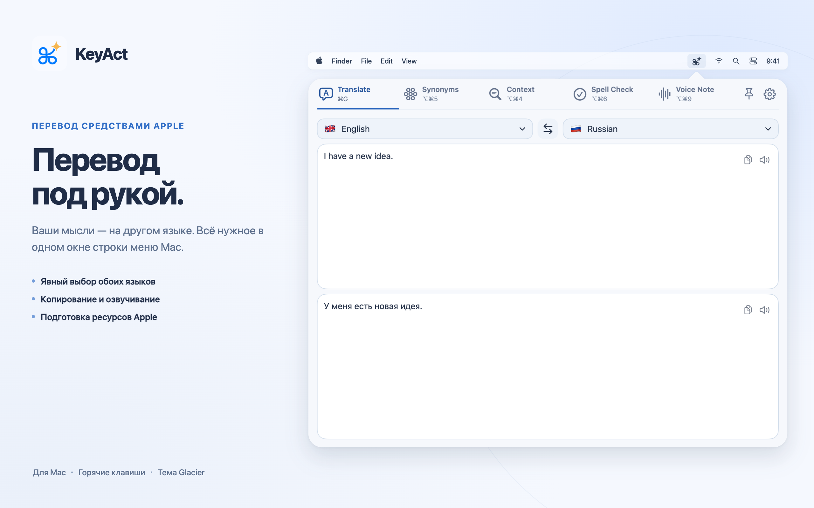

Языки без подмены
Явно укажите исходный и целевой язык. Мастер проверит ресурсы отдельно для каждого инструмента; неподдерживаемый язык не заменяется другим.
Как работают ресурсы →KeyAct · macOS 15 и новее
Переведите текст средствами Apple, разберите слово или сохраните мысль голосом. Выберите языки и открывайте нужные инструменты из строки меню Mac.

Явно укажите исходный и целевой язык. Мастер проверит ресурсы отдельно для каждого инструмента; неподдерживаемый язык не заменяется другим.
Как работают ресурсы →Связанные слова, части речи, системная орфография и словарь. Офлайн-каталог форм глаголов включает 14 языков, но не все слова этих языков.
Возможности инструментов →Запишите аудио, получите текст через доступный локальный механизм распознавания или сохраните оба результата. Перед записью задайте точный язык.
Настроить голосовую заметку →Вкладки, горячие клавиши, высота окна и тема. URL- и HTTP-действия; в версии App Store — также доверенные исполняемые скрипты, установленные вами.
Скрипты и различия версий →У Apple разное покрытие языков для перевода, анализа, словарей и речи. Некоторым ресурсам нужна первоначальная загрузка; не каждый можно установить из приложения. Связанные слова не всегда взаимозаменяемые синонимы, а Context не выполняет полную проверку грамматики. Дополнительный онлайн-поиск определения и HTTP-действия требуют интернета.
Полная локальная версия может выполнять введённые shell-команды и использовать Accessibility. Эти возможности не входят в sandbox-версию App Store. Подробности и помощь.